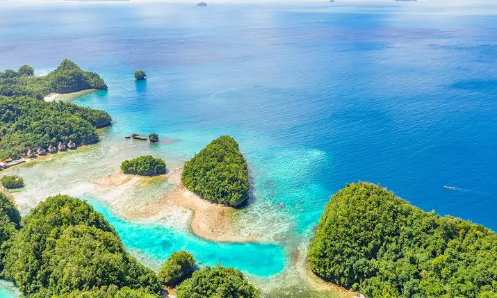
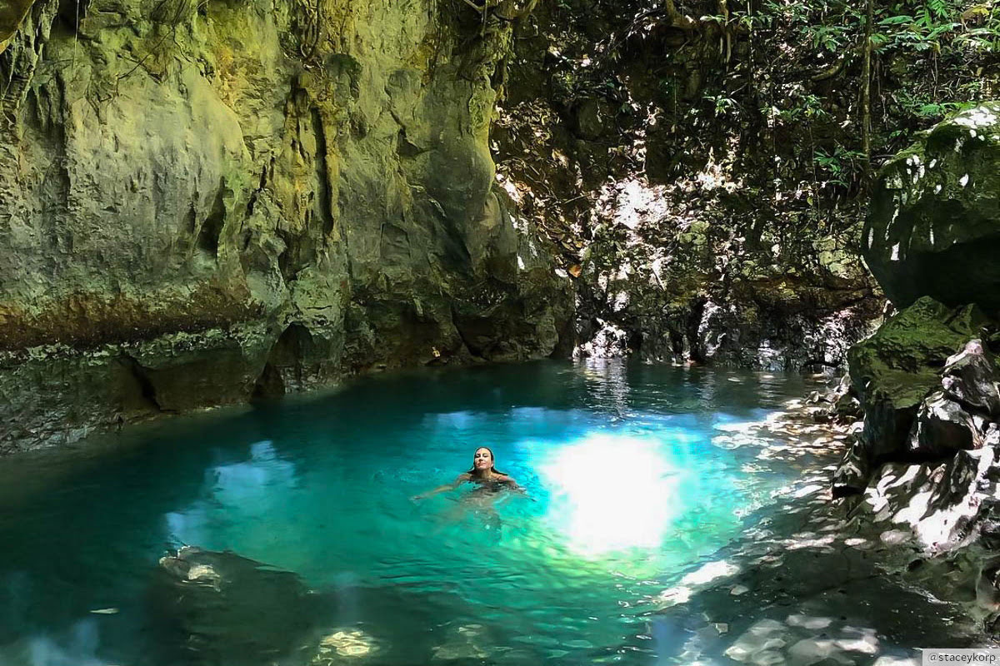
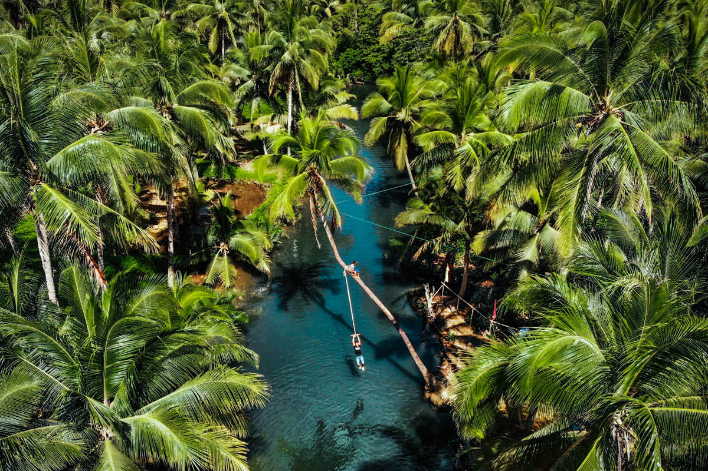

History of Siargao
Siargao is a tear-shaped island in the Philippine Sea known for its pristine beaches, crystal-clear waters, and world-class surfing spots. The island was once a hidden gem frequented only by adventurous travelers and surfers seeking the perfect wave.
In recent years, Siargao has gained popularity as a top destination for surfers and beach lovers from around the world. The island's laid-back vibe, stunning scenery, and vibrant local culture make it a must-visit destination in the Philippines.



Watch a Video of Siargao Island
Experience the beauty of Siargao Island by watching this video by Our Awesome planet: